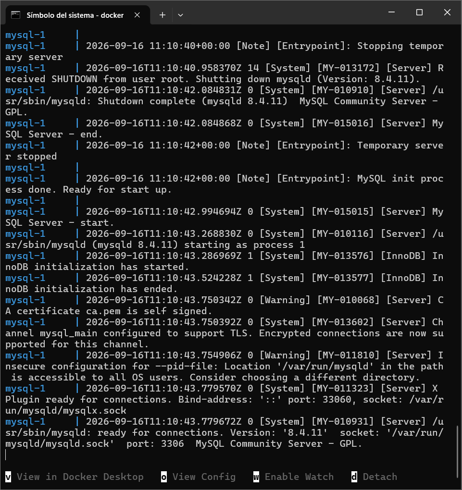
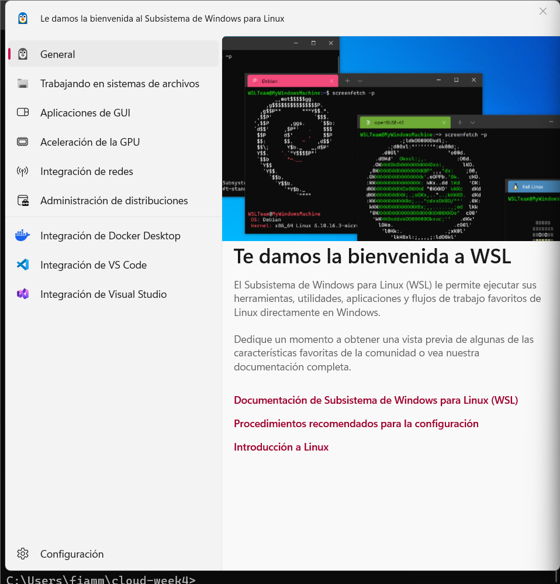

.png)
.png)
.png)
Application version: 1.0.3
Number of visits: Loading...
This week I created a 3-layer web application (frontend, backend and database). In the frontend I used Nginx, which is used to show the page to the user and obtain the information from the backend. In the backend layer I used Python Flask/Gunicorn, where the application logic is located. It offers a REST API that reads and writes data from the third layer. MySQL is used as the database, where the data is stored.
On the other hand, I also implemented a visit counter. When the page is loaded or refreshed, the backend increments the counter in MySQL and returns the updated value. In Rahti, each component runs in its own Pod/Deployment. From the Internet, only the frontend is accessible through a Route. The backend and MySQL communicate with it through Services inside the internal network.

The way these three components communicate is the following: the user accesses
the frontend through the public Rahti Route using Nginx. When the page needs
to access the counter, a request is made to /api/visits, where
Nginx redirects the request to the internal backend Service
week4-backend:8000.
On the other hand, the backend is made with Flask and connects to MySQL using
DB_HOST=week4-mysql. The backend performs a write operation
UPDATE visits SET count = count + 1 and then performs a read
operation SELECT count FROM visits. The value is returned in JSON
and the frontend shows that value on the web page.
I tested it and the value increases not only when loading the page, but also when refreshing it.
To prevent MySQL data from being lost when the Pod disappears, I created a
PersistentVolumeClaim (PVC) in Rahti called
week4-mysql-data, which is mounted in MySQL as
/var/lib/mysql. At first, the PVC was in Pending state and it
changed to Bound when the MySQL Pod started using it.
For example, to test persistence, I first checked the visit counter and it was at 3. Then I deleted the MySQL Pod. Rahti/Kubernetes automatically created a new MySQL Pod, and when I opened the application again, the counter changed to 4 and continued increasing. This demonstrates that the data was stored in persistent storage and not only inside the Pod. The Pod can be replaced, but the PVC continues to exist and can be mounted again.
When I manually deleted the backend Pod, it was managed by a Deployment. Because one replica was configured, after I deleted the Pod it was automatically replaced by a new one. This happened because Kubernetes/OpenShift tries to maintain the desired state defined by the Deployment. Since the Deployment specified that one replica should exist, when the Pod disappeared another one was automatically created.
At the beginning, the backend had 1 replica, and then I changed the Deployment
to use 3 replicas with the command
oc scale deployment week4-backend --replicas=3.
In this case, Rahti automatically created three backend Pods. To check this,
I used get pods and all three were in Running state.
The frontend continued working without needing to know the IP address of each Pod. This works thanks to the Service, which provides a stable name and distributes the requests between the available Pods.
This was only a test, so later I changed it back to one replica to avoid using unnecessary resources.
When I wanted to update the application to another version, I only had to change the application version in the frontend and build a new image.
I uploaded it to Docker Hub and then updated the Rahti Deployment to use the
new image. During the process I could observe the rolling update with
oc get pods -w. Rahti first created a new Pod with version 1.0.1.
When the new Pod was in Running state, the old Pod started terminating.
Finally, I could see Application version: 1.0.1 on the public
website.
At the beginning, Docker gave an error because the Docker daemon was not running. Later I discovered that WSL 2, which Docker Desktop needed, was not configured.
Later, Windows did not recognize the oc command. The problem was
that my oc.exe was not in the correct PATH because the last time
I used it, in Week 2, I had saved it in another folder.
When I moved from the local environment to Rahti, Nginx was still pointing to
the backend using backend:8000, but in Rahti the Service was called
week4-backend:8000.
.png)


The main differences between them are that with Docker Compose + cPouta, you manage a Linux virtual machine and run the containers inside that VM. You have more direct control over the operating system, Docker, ports and files, but you also have to manage more things manually, such as installing Docker, maintaining the VM, configuring the firewall and updating services.
On the other hand, with Rahti/OpenShift you do not directly manage a VM. You define resources such as Deployments, Services, Routes, ConfigMaps, Secrets and PVCs. Rahti also takes care of running and managing the Pods. If a Pod fails, it can recreate it automatically. Scaling from 1 to 3 replicas is much easier, Services allow components to communicate without depending on specific IP addresses, Secrets and ConfigMaps separate configuration and credentials from the code, and rolling updates allow the application to be updated in a more controlled way.
Docker Compose seemed simpler to me for a small and local application because Rahti has more concepts to learn, but Rahti offers better orchestration, recovery, scalability and management for cloud applications.
A public API allows an application to automatically retrieve information from another source. The data isn't copied; instead, the backend sends requests to receive the specific data it wants to display on the page. On this page, I used the Finnish Meteorological Institute's (FMI) public API, which publishes weather data, and my backend sends requests to it in order to display the data.
An open data portal is a platform where public agencies, institutions, or other public organizations post the data they hold so that people outside these entities can easily and automatically access and use it, since it is in an open format and its machine-readable nature greatly facilitates its reuse.
YAML is a data serialization format designed to make it easy for people to read and write data. In Kubernetes/OpenShift, it is widely used to write manifests that describe how we want resources to be configured. An interesting comparison with JSON is that both can represent virtually the same information. In fact, Kubernetes accepts both YAML and JSON manifests, and the Kubernetes API uses JSON in its requests. YAML is simply often more convenient for a person to write configuration files.
It is a firewall specialized in HTTP/HTTPS web application traffic. It examines requests sent to an application and can block requests that appear to be malicious. A WAF does not replace code-level security. It is still necessary to validate inputs, protect passwords, keep dependencies up to date, etc.; it simply adds another layer of protection.
Starting from the web page developed the previous week, I made a copy of it and started it with Docker Compose, changing the name to Week 5. For this week's assignment, I chose the Public API / Open Data option, using the public API from the Finnish Meteorological Institute (FMI). As a first step, I added the requests library to the Flask backend so I could make HTTP requests to an external API. I created a new endpoint in Flask called weather and tested if it could return the complete XML. I made the query using temperature and windspeedms. Then I configured Nginx so the routes /api/visits and /api/weather were correctly redirected to the Flask backend. I updated the HTML so I could see the data on the page. The frontend uses JavaScript with fetch('/api/weather') to get the data from the backend. I checked that both visits and weather responded with status 200. Finally, I checked that the page works and shows both the visit counter and the weather data.
Temperature: Loading... °C
Wind speed: Loading... m/s
Forecast time: Loading...
CSC – Rahti Documentation: Usage
https://docs.csc.fi/cloud/rahti/usage/
General information about deploying and managing applications in Rahti.
CSC – Rahti Networking
https://docs.csc.fi/cloud/rahti/networking/
Used for Services, internal communication between Pods, and Routes for
exposing the frontend.
CSC – Rahti FAQ / Persistent Storage
https://docs.csc.fi/cloud/rahti/reference/faq/
Used for PersistentVolumeClaims, standard-csi storage and Routes.
Kubernetes – Deployments
https://kubernetes.io/docs/concepts/workloads/controllers/deployment/
Used for Deployments, replicas, Pod recovery, scaling and rolling updates.
Kubernetes – Services
https://kubernetes.io/docs/concepts/services-networking/service/
Used to understand how frontend, backend and MySQL communicate without
depending on individual Pod IP addresses.
Kubernetes – ConfigMaps
https://kubernetes.io/docs/concepts/configuration/configmap/
Used for storing non-sensitive configuration such as database host,
username and database name.
Kubernetes – Secrets
https://kubernetes.io/docs/concepts/configuration/secret/
Used for storing sensitive information such as database passwords.
Docker – Docker Compose
https://docs.docker.com/compose/
Used for the local three-container application and Docker Compose configuration.
Docker – Environment variables in Compose
https://docs.docker.com/compose/how-tos/environment-variables/
Used for the .env configuration in the local application.
Kubernetes – Update a Deployment Without Downtime
https://kubernetes.io/docs/tasks/run-application/update-deployment-rolling/
Used for the application update from version 1.0.0 to 1.0.1 and the
rolling update experiment.
Finnish Meteorological Institute – Open Data Manual
https://en.ilmatieteenlaitos.fi/open-data-manual
Used to understand FMI Open Data services and how applications can access
meteorological data through public APIs.
Finnish Meteorological Institute – WFS Examples and Guidelines
https://en.ilmatieteenlaitos.fi/open-data-manual-wfs-examples-and-guidelines
Used for the public API exercise and to understand how to request weather
forecast data using parameters such as temperature and wind speed.
data.europa.eu – Choosing the Right Format for Open Data
https://data.europa.eu/elearning/en/module9/
Used to understand why data formats are important for open data and the
differences between formats such as CSV, JSON, XML and documents.
Kubernetes – Objects in Kubernetes
https://kubernetes.io/docs/concepts/overview/working-with-objects/
Used to understand Kubernetes objects, YAML manifests and how configuration
describes the desired state of resources.
Microsoft Learn – Web Application Firewall Documentation
https://learn.microsoft.com/en-us/azure/web-application-firewall/
Used to understand what a Web Application Firewall (WAF) is and how it
protects web applications from common attacks and vulnerabilities.